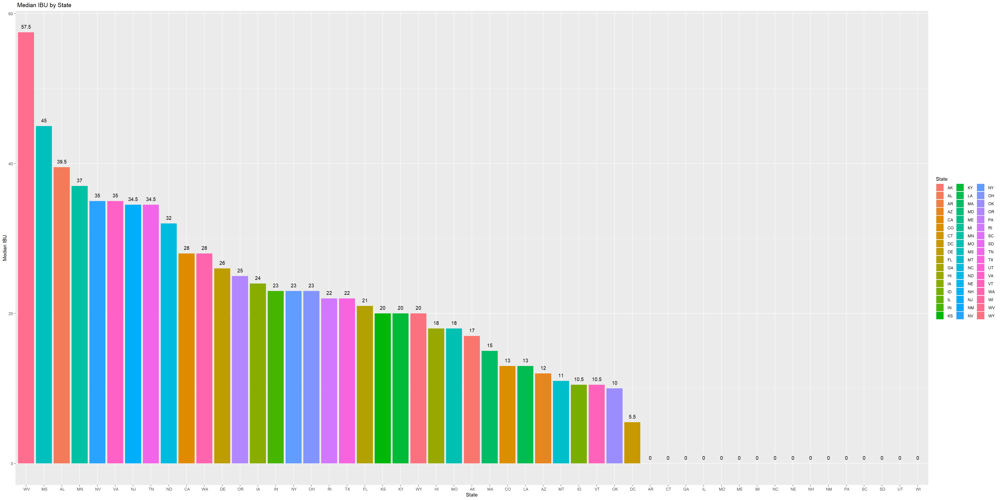

Introduction:
Today we will go over the results of the questions that you requested and addtional insights that I discovered during my exploration of this data. With that being said lets dive right in and go over the findings.
#dependencys
library(tidyverse)## -- Attaching packages --------------------------------------- tidyverse 1.3.0 --## <U+2713> ggplot2 3.2.1 <U+2713> purrr 0.3.3
## <U+2713> tibble 2.1.3 <U+2713> dplyr 0.8.5
## <U+2713> tidyr 1.0.0 <U+2713> stringr 1.4.0
## <U+2713> readr 1.3.1 <U+2713> forcats 0.5.0## Warning: package 'dplyr' was built under R version 3.6.3## Warning: package 'forcats' was built under R version 3.6.3## -- Conflicts ------------------------------------------ tidyverse_conflicts() --
## x dplyr::filter() masks stats::filter()
## x dplyr::lag() masks stats::lag()library(class)
library(caret)## Loading required package: lattice##
## Attaching package: 'caret'## The following object is masked from 'package:purrr':
##
## liftlibrary(e1071)
library(ggplot2)#Import the files
beers_df = read.csv("C:/Users/blake/Desktop/MSDS/Case/Blake-Needy-Team-5/Data/Beers.csv",header = TRUE,stringsAsFactors=FALSE)
breweries_df = read.csv("C:/Users/blake/Desktop/MSDS/Case/Blake-Needy-Team-5/Data/Breweries.csv",header = TRUE,stringsAsFactors=FALSE)#Beer Data look.
beers_dfThis was an initail look at the beer data. The type of data shows Name of the beer, Beer ID, ABV,IBU Brewery ID Style and how many ounces each beer contains.
#Brewery data
breweries_dfThis was an initail look at the Brewery data. The type of data shows the Name of the brewery, City and State. When reviewing this Data I noticed there were duplicate values proceeded in the process of removing these data points from the Values.
#Checking to see if there is duplicated Values and removing them.
#duplicated(breweries_df$Name)
breweries_df <- breweries_df[!duplicated(breweries_df$Name), ]
breweries_dfOn futher exploration on the Brewery Data I checked to see if we had duplicated values in the Name category. I noticed that there were some values duplicated and removed these from the Brewery Data set. Based on my check there were a total of 7 Duplicated Values.
#duplicated(beers_df$Name)
beers_df <- beers_df[!duplicated(beers_df$Name), ]
beers_dfOn futher exploration on the Beer Data I checked to see if we had duplicated values in the Name category. We noticed that there were some values duplicated and removed these from the Beer Data set. There was a total of 105 rows removed from the Beer Data set from the first pass
#find all the values that have () in them
x = ")"
beers <- beers_df %>%
filter(
str_detect(beers_df$Name, fixed(x)))
#List of all the beers I want to keep
Beers_to_keep <- beers %>%
distinct(ABV, IBU, Style, Ounces, .keep_all = TRUE)
#Turn the beers I want to keep into a List
list_beer <- as.list(Beers_to_keep$Name)
#Filter out the beers and set a dataframe to drop
beers_to_drop <- beers[ ! beers$Name %in% list_beer, ]
#Create a list to drop from my main dataframe
beers_to_drop_list<- as.list(beers_to_drop$Name)
beers_df <-beers_df[ ! beers_df$Name %in% beers_to_drop_list, ]
beers_dfOn review there was another duplication that was discovered in the Data. We noticed that some beers are duplicated but have a slightly diffrent name with the year in () at the end of the beers name. Since those values were the same we decided to remove these since they are the same beer in all other aspects other than name and beer id. The code above is how we addressed that issue.
#Addressing the Null Values
library(dplyr)
beers_df[is.na(beers_df)] <- 0
beers_dfI replaced all Null values with zero in the beer data. I did this since removing these values will skew the data. I felt it was approprate to still count the beers accordingly when displaying their values.
#Number of Breweries by State
breweries_by_state <- breweries_df %>% group_by(State) %>% tally()
breweries_by_stateTally count of Breweries to create a data for a visualization to show the count of breweries per state.
#Number of Breweries by State Visulation
g <- ggplot(breweries_by_state, aes(x = reorder(State,-n),y = n, fill =State)) + geom_bar(stat = "identity")+ geom_text(aes(label = n), vjust=-1) + labs(title =" Breweries by State", x = "State", y = "Number of Breweries")
gColorado has the highest Breweries than any other state with 46 breweries in the State. This is displayed in the Graph above.
#Merged the Dataframe’s
beer_breweries_df <- merge(breweries_df,beers_df, by.x=c("Brew_ID"), by.y=c("Brewery_id"))
beer_breweries_dfhead(beer_breweries_df)tail(beer_breweries_df)This was an initail look at the Brewery data. The type of data shows
#Median ABV and IBU
library(plyr)## ---------------------------------------------------------------------------------------------## You have loaded plyr after dplyr - this is likely to cause problems.
## If you need functions from both plyr and dplyr, please load plyr first, then dplyr:
## library(plyr); library(dplyr)## ---------------------------------------------------------------------------------------------##
## Attaching package: 'plyr'## The following objects are masked from 'package:dplyr':
##
## arrange, count, desc, failwith, id, mutate, rename, summarise, summarize## The following object is masked from 'package:purrr':
##
## compactABV_Median<- ddply(beer_breweries_df,~State,summarise,Median_ABV = median(ABV))
IBU_Median<- ddply(beer_breweries_df,~State,summarise,Median_IBU = median(IBU))
ABV_MedianIBU_Median#Plotted ABV Median and IBU
library(ggplot2)
g <- ggplot(ABV_Median, aes(x = reorder(State,-Median_ABV),y = Median_ABV, fill =State)) + geom_bar(stat = "identity")+ geom_text(aes(label = Median_ABV), vjust=-1) + labs(title =" Median Alcohol by Volume by State", x = "State", y = "Median Alcohol by volume")
gDC has the highest median alcohol content per volume then any other state at .0625 (6.25%). This is displayed by the graph above.
#Plotted ABV Median and IBU
g <- ggplot(IBU_Median, aes(x = reorder(State,-Median_IBU),y = Median_IBU, fill =State)) + geom_bar(stat = "identity")+ geom_text(aes(label = Median_IBU), vjust=-1) + labs(title =" Median IBU by State", x = "State", y = "Median IBU")
g WV has the highest Median IBU than any other state per the results above at 57.5.
Highest_AVB<- beer_breweries_df[which.max(beer_breweries_df$ABV),]
Highest_IBU <- beer_breweries_df[which.max(beer_breweries_df$IBU),]
Highest_AVBHighest_IBUThe highest Alcohol Content by Volume comes from CO with a ABV of .128 (12.8%). The beers name is Lee Hill Series Vol. 5 - Belgian Style Quadrupel Ale and is brewed by Upslope Brewing Company.
The highest IBU beer comes from OR with a IBU of 138. The beers name is Bitter Bitch Imperial IPA and is brewed by Asoria Brewing Company.
summary(beer_breweries_df)## Brew_ID Name.x City State Name.y
## Min. : 1.0 Length:2225 Length:2225 Length:2225 Length:2225
## 1st Qu.: 92.0 Class :character Class :character Class :character Class :character
## Median :207.0 Mode :character Mode :character Mode :character Mode :character
## Mean :231.3
## 3rd Qu.:366.0
## Max. :558.0
## Beer_ID ABV IBU Style Ounces
## Min. : 5 Min. :0.00000 Min. : 0.00 Length:2225 Min. : 8.40
## 1st Qu.: 877 1st Qu.:0.05000 1st Qu.: 0.00 Class :character 1st Qu.:12.00
## Median :1495 Median :0.05600 Median : 16.00 Mode :character Median :12.00
## Mean :1461 Mean :0.05832 Mean : 24.33 Mean :13.64
## 3rd Qu.:2091 3rd Qu.:0.06700 3rd Qu.: 40.00 3rd Qu.:16.00
## Max. :2692 Max. :0.12800 Max. :138.00 Max. :32.00ABV <- data.frame(beer_breweries_df$ABV)
ggplot(data = ABV, aes(x = "", y = beer_breweries_df.ABV)) +
geom_boxplot() + labs(title =" ABV", x = "", y = "ABV")ggplot(data = beer_breweries_df, aes(x = State, y = ABV)) +
geom_boxplot() + labs(title =" ABV by State", x = "State", y = "ABV")Summary statistics on ABV
Based on the data we expect to have most beers be produced between 5% to 6.7%, with the most occuring alcohol content occuring at 5.6% and a overall average of all beers at 5.82%
There are few expections on this of course, with the maximum alcohol content by volume being 12.8% and minimum being 0%. Since this is what the Market is producing today, it can mean a number of things. This is what the market is currently looking for, the current standerdized process for brewing cause most beers to have this expected alcohol content, or there are untapped potentail markets where they are looking for beers with more alcohol content.
#Dropped the zeros for the correlation
beer_df_ABV_IBU <- filter(beer_breweries_df, IBU != 0)#Scatter Plot of ABV and IBU
IBU_ABV <- ggplot(beer_df_ABV_IBU, aes(IBU, ABV, colour = State)) +
geom_point() +
theme(legend.position = "none")
IBU_ABV Based on the graph above. It is apprent there is a postive relationshipfor Alcohol Content and IBU. Now with that being said the large majoriity of this is cocentrated between just below 5% to 6% but there still shows a postive trend.
Ale <- dplyr::filter(beer_breweries_df, grepl("Ale",Name.y
))
IPA <- dplyr::filter(beer_breweries_df, grepl("IPA",Name.y
))
IPA$Type <- "IPA"
Ale$Type <- "Ale"
IPAAleAle_IPA <- rbind(Ale,IPA)
Ale_IPAAle_IPA_df <- select(Ale_IPA,ABV,IBU,Type)
Ale_IPA_dfWe filtered the data to be two Data sets one for Ale and One for IPA then added a new column to each called “Type” identifiying them as either IPA’s or ALE’s. From this point I appeneded the two dataframes together to make one useable set to test off of called ALE_IPA.
Ale_IPA_df %>% ggplot(aes(x = ABV, y = IBU , color = Type)) + geom_point()#Use KNN to investigate the relationship between IPA and other Ales
#Find ABV and IBU for both any beer with 'Ale' in its name other than IPA and India Pale Ales (IPA)
set.seed(500)
splitPerc = .70
trainIndices = sample(1:dim(Ale_IPA_df)[1],round(splitPerc * dim(Ale_IPA_df)[1]))
train = Ale_IPA_df[trainIndices,]
test = Ale_IPA_df[-trainIndices,]
classifications = knn(train[,c(1,2)],test[,c(1,2)],train$Type, prob = TRUE, k = 30)
table(classifications,test$Type)##
## classifications Ale IPA
## Ale 138 24
## IPA 32 68confusionMatrix(table(classifications,test$Type))## Confusion Matrix and Statistics
##
##
## classifications Ale IPA
## Ale 138 24
## IPA 32 68
##
## Accuracy : 0.7863
## 95% CI : (0.7316, 0.8343)
## No Information Rate : 0.6489
## P-Value [Acc > NIR] : 9.116e-07
##
## Kappa : 0.5401
##
## Mcnemar's Test P-Value : 0.3496
##
## Sensitivity : 0.8118
## Specificity : 0.7391
## Pos Pred Value : 0.8519
## Neg Pred Value : 0.6800
## Prevalence : 0.6489
## Detection Rate : 0.5267
## Detection Prevalence : 0.6183
## Balanced Accuracy : 0.7754
##
## 'Positive' Class : Ale
## The initial test to see the value and correlation using KNN
set.seed(500)
iterations = 100
numks = 60
splitPerc = .70
masterAcc = matrix(nrow = iterations, ncol = numks)
for(j in 1:iterations)
{
trainIndices = sample(1:dim(Ale_IPA_df)[1],round(splitPerc * dim(Ale_IPA_df)[1]))
train = Ale_IPA_df[trainIndices,]
test = Ale_IPA_df[-trainIndices,]
for(i in 1:numks)
{
classifications = knn(train[,c(1,2)],test[,c(1,2)],train$Type, prob = TRUE, k = i)
table(classifications,test$Type)
CM = confusionMatrix(table(classifications,test$Type))
masterAcc[j,i] = CM$overall[1]
}
}
MeanAcc = colMeans(masterAcc)
plot(seq(1,numks,1),MeanAcc, type = "l")which.max(MeanAcc)## [1] 29max(MeanAcc)## [1] 0.8005725set.seed(500)
splitPerc = .70
trainIndices = sample(1:dim(Ale_IPA_df)[1],round(splitPerc * dim(Ale_IPA_df)[1]))
train = Ale_IPA_df[trainIndices,]
test = Ale_IPA_df[-trainIndices,]
classifications = knn(train[,c(1,2)],test[,c(1,2)],train$Type, prob = TRUE, k = 29)
table(classifications,test$Type)##
## classifications Ale IPA
## Ale 138 24
## IPA 32 68confusionMatrix(table(classifications,test$Type))## Confusion Matrix and Statistics
##
##
## classifications Ale IPA
## Ale 138 24
## IPA 32 68
##
## Accuracy : 0.7863
## 95% CI : (0.7316, 0.8343)
## No Information Rate : 0.6489
## P-Value [Acc > NIR] : 9.116e-07
##
## Kappa : 0.5401
##
## Mcnemar's Test P-Value : 0.3496
##
## Sensitivity : 0.8118
## Specificity : 0.7391
## Pos Pred Value : 0.8519
## Neg Pred Value : 0.6800
## Prevalence : 0.6489
## Detection Rate : 0.5267
## Detection Prevalence : 0.6183
## Balanced Accuracy : 0.7754
##
## 'Positive' Class : Ale
## Relationship_with_state <- select(beer_breweries_df,State,ABV,IBU,Style,Ounces)
Relationship_with_state$Style[Relationship_with_state$Style == ""] <- NA
Relationship_with_state<- na.omit(Relationship_with_state)
df2 <- transform(Relationship_with_state,StyleID=as.numeric(factor(Style)))
df2Turned the style into a factor and numeric so that I can try to see if there if there is anyway to predect what state the beer comes from based on ABV, IBU and Style of Beer. But to do so I had to create a column to create a unique identifier for each Style name so that it can be used to in KNN model.
set.seed(500)
splitPerc = .70
trainIndices = sample(1:dim(df2)[1],round(splitPerc * dim(df2)[1]))
train = df2[trainIndices,]
test = df2[-trainIndices,]
classifications = knn(train[,c(2,6)],test[,c(2,6)],train$State, prob = TRUE, k = 30)
u <- union(classifications,test$State)
t <- table(factor(classifications, u), factor(test$State, u))
confusionMatrix(t)## Confusion Matrix and Statistics
##
##
## IN MA CA MI TX VT CO IL OR WA MT ME RI AZ NY PA WI MN KY KS NH GA
## IN 10 0 3 5 1 0 12 3 6 5 3 0 1 5 0 6 5 5 2 1 1 1
## MA 1 2 3 3 2 0 2 2 0 0 0 0 2 0 2 3 2 1 0 0 0 0
## CA 1 4 5 6 5 5 12 5 2 3 0 2 0 3 4 6 1 6 1 2 0 0
## MI 3 4 6 13 2 1 6 2 5 3 1 1 0 2 3 2 3 0 1 1 1 1
## TX 4 0 2 6 6 0 7 0 3 0 0 0 0 0 0 1 0 4 1 0 1 0
## VT 0 0 1 0 0 0 0 1 0 0 0 0 0 0 0 0 0 0 0 0 0 0
## CO 7 8 21 15 6 1 27 5 10 8 6 3 2 4 8 5 6 3 2 3 0 1
## IL 2 1 1 1 0 0 2 2 1 1 1 1 0 0 0 0 3 1 0 0 0 1
## OR 0 1 3 4 2 1 5 2 1 1 0 0 1 1 2 1 0 1 0 0 1 0
## WA 1 0 1 0 2 0 1 1 0 0 0 0 0 0 1 1 0 0 0 0 0 0
## MT 0 0 1 0 0 0 0 0 0 0 0 0 0 0 0 0 0 1 0 0 0 0
## ME 0 0 1 1 0 0 1 0 0 0 0 0 0 0 0 0 1 0 0 0 0 0
## RI 0 0 1 0 1 0 0 0 0 0 0 0 0 0 0 0 0 0 0 0 0 0
## AZ 0 0 0 0 0 0 0 0 0 0 0 0 0 0 0 0 0 0 0 0 0 0
## NY 0 2 0 0 0 0 1 1 0 1 1 1 0 0 2 1 0 0 0 0 0 0
## PA 0 1 0 0 1 0 0 0 1 0 0 0 0 0 0 0 0 0 0 0 0 0
## WI 0 0 0 0 0 0 0 0 0 0 0 0 0 0 0 0 2 0 0 1 0 0
## MN 0 0 0 0 0 0 0 0 0 0 0 0 0 0 0 0 0 0 0 0 0 0
## KY 0 0 0 0 0 0 0 0 0 0 0 0 0 0 0 0 0 0 0 0 0 0
## KS 0 0 0 0 0 0 0 0 0 0 0 0 0 0 0 0 0 0 0 0 0 0
## NH 0 0 0 0 0 0 0 0 0 0 0 0 0 0 0 0 0 0 0 0 0 0
## GA 0 0 0 0 0 0 0 0 0 0 0 0 0 0 0 0 0 0 0 0 0 0
##
## MO MD NC OH AK VA MS AR FL LA ID OK HI IA SD DC NV CT NM NE UT ND
## IN 1 1 4 1 1 2 0 0 3 0 4 0 3 1 0 1 0 2 1 0 2 1
## MA 1 0 0 0 1 1 0 0 0 0 0 0 0 0 0 0 0 0 0 1 0 0
## CA 2 0 2 1 0 1 1 0 3 0 0 1 1 3 1 0 2 0 2 1 2 0
## MI 2 2 1 2 1 0 1 0 1 0 1 0 0 0 0 1 1 0 0 0 1 0
## TX 1 1 0 2 0 0 0 0 2 0 0 0 1 2 0 0 1 1 0 1 2 0
## VT 0 0 0 0 0 0 0 0 0 0 1 0 0 0 0 0 0 0 0 0 0 0
## CO 3 2 6 6 4 3 1 2 4 5 3 1 2 4 0 2 0 1 1 3 2 0
## IL 0 0 0 1 1 0 0 0 0 0 0 0 0 1 0 0 0 1 0 0 0 0
## OR 0 0 3 0 0 1 0 0 1 0 0 1 0 1 0 0 0 0 0 1 1 0
## WA 1 0 0 0 1 0 0 0 1 0 0 0 0 0 0 0 0 0 0 0 0 0
## MT 1 0 0 0 0 0 0 0 1 0 0 0 0 0 0 0 0 0 0 0 0 0
## ME 1 0 0 0 0 0 0 0 1 0 0 0 0 0 0 0 0 0 0 0 0 0
## RI 0 0 0 0 0 0 0 0 0 0 0 0 0 0 0 0 0 0 0 0 0 0
## AZ 0 0 0 1 0 0 0 0 0 0 0 0 0 1 0 0 0 0 0 0 0 0
## NY 0 0 0 0 0 0 0 0 0 0 0 0 0 0 0 0 0 0 0 1 0 0
## PA 0 0 0 0 0 0 0 1 0 0 1 0 0 0 0 0 0 0 0 0 0 0
## WI 0 0 0 0 0 0 0 0 0 0 0 0 0 0 0 0 0 0 0 0 1 0
## MN 0 0 0 0 0 0 0 0 0 0 0 0 0 0 0 0 0 0 0 0 0 0
## KY 0 0 0 0 0 0 0 0 0 0 0 0 0 0 0 0 0 0 0 0 0 0
## KS 0 0 0 0 0 0 0 0 0 0 0 0 0 0 0 0 0 0 0 0 0 0
## NH 0 0 0 0 0 0 0 0 0 0 0 0 0 0 0 0 0 0 0 0 0 0
## GA 0 0 0 0 0 0 0 0 0 0 0 0 0 0 0 0 0 0 0 0 0 0
##
## AL
## IN 0
## MA 0
## CA 0
## MI 0
## TX 0
## VT 0
## CO 2
## IL 0
## OR 0
## WA 0
## MT 0
## ME 0
## RI 0
## AZ 0
## NY 0
## PA 0
## WI 0
## MN 0
## KY 0
## KS 0
## NH 0
## GA 0
## [ reached getOption("max.print") -- omitted 23 rows ]
##
## Overall Statistics
##
## Accuracy : 0.1051
## 95% CI : (0.0829, 0.1309)
## No Information Rate : 0.1141
## P-Value [Acc > NIR] : 0.7842
##
## Kappa : 0.0355
##
## Mcnemar's Test P-Value : NA
##
## Statistics by Class:
##
## Class: IN Class: MA Class: CA Class: MI Class: TX Class: VT
## Sensitivity 0.34483 0.086957 0.102041 0.24074 0.214286 0.000000
## Specificity 0.85400 0.958009 0.852512 0.89869 0.932602 0.995441
## Pos Pred Value 0.09709 0.068966 0.052083 0.17333 0.122449 0.000000
## Neg Pred Value 0.96625 0.967033 0.922807 0.93063 0.964344 0.987934
## Prevalence 0.04354 0.034535 0.073574 0.08108 0.042042 0.012012
## Detection Rate 0.01502 0.003003 0.007508 0.01952 0.009009 0.000000
## Detection Prevalence 0.15465 0.043544 0.144144 0.11261 0.073574 0.004505
## Balanced Accuracy 0.59942 0.522483 0.477276 0.56972 0.573444 0.497720
## Class: CO Class: IL Class: OR Class: WA Class: MT Class: ME
## Sensitivity 0.35526 0.083333 0.034483 0.00000 0.000000 0.000000
## Specificity 0.69322 0.968847 0.945055 0.98292 0.993884 0.990881
## Pos Pred Value 0.12981 0.090909 0.027778 0.00000 0.000000 0.000000
## Neg Pred Value 0.89301 0.965839 0.955556 0.96641 0.981873 0.987879
## Prevalence 0.11411 0.036036 0.043544 0.03303 0.018018 0.012012
## Detection Rate 0.04054 0.003003 0.001502 0.00000 0.000000 0.000000
## Detection Prevalence 0.31231 0.033033 0.054054 0.01652 0.006006 0.009009
## Balanced Accuracy 0.52424 0.526090 0.489769 0.49146 0.496942 0.495441
## Class: RI Class: AZ Class: NY Class: PA Class: WI Class: MN
## Sensitivity 0.000000 0.000000 0.090909 0.000000 0.086957 0.00000
## Specificity 0.996970 0.996928 0.986025 0.992188 0.996890 1.00000
## Pos Pred Value 0.000000 0.000000 0.181818 0.000000 0.500000 NaN
## Neg Pred Value 0.990964 0.977410 0.969466 0.960666 0.968278 0.96697
## Prevalence 0.009009 0.022523 0.033033 0.039039 0.034535 0.03303
## Detection Rate 0.000000 0.000000 0.003003 0.000000 0.003003 0.00000
## Detection Prevalence 0.003003 0.003003 0.016517 0.007508 0.006006 0.00000
## Balanced Accuracy 0.498485 0.498464 0.538467 0.496094 0.541923 0.50000
## Class: KY Class: KS Class: NH Class: GA Class: MO Class: MD
## Sensitivity 0.00000 0.00000 0.000000 0.000000 0.00000 0.000000
## Specificity 1.00000 1.00000 1.000000 1.000000 1.00000 1.000000
## Pos Pred Value NaN NaN NaN NaN NaN NaN
## Neg Pred Value 0.98949 0.98799 0.993994 0.993994 0.98048 0.990991
## Prevalence 0.01051 0.01201 0.006006 0.006006 0.01952 0.009009
## Detection Rate 0.00000 0.00000 0.000000 0.000000 0.00000 0.000000
## Detection Prevalence 0.00000 0.00000 0.000000 0.000000 0.00000 0.000000
## Balanced Accuracy 0.50000 0.50000 0.500000 0.500000 0.50000 0.500000
## Class: NC Class: OH Class: AK Class: VA Class: MS Class: AR
## Sensitivity 0.00000 0.00000 0.00000 0.00000 0.000000 0.000000
## Specificity 1.00000 1.00000 1.00000 1.00000 1.000000 1.000000
## Pos Pred Value NaN NaN NaN NaN NaN NaN
## Neg Pred Value 0.97598 0.97898 0.98649 0.98799 0.995495 0.995495
## Prevalence 0.02402 0.02102 0.01351 0.01201 0.004505 0.004505
## Detection Rate 0.00000 0.00000 0.00000 0.00000 0.000000 0.000000
## Detection Prevalence 0.00000 0.00000 0.00000 0.00000 0.000000 0.000000
## Balanced Accuracy 0.50000 0.50000 0.50000 0.50000 0.500000 0.500000
## Class: FL Class: LA Class: ID Class: OK Class: HI Class: IA
## Sensitivity 0.00000 0.000000 0.00000 0.000000 0.00000 0.00000
## Specificity 1.00000 1.000000 1.00000 1.000000 1.00000 1.00000
## Pos Pred Value NaN NaN NaN NaN NaN NaN
## Neg Pred Value 0.97447 0.992492 0.98498 0.995495 0.98949 0.98048
## Prevalence 0.02553 0.007508 0.01502 0.004505 0.01051 0.01952
## Detection Rate 0.00000 0.000000 0.00000 0.000000 0.00000 0.00000
## Detection Prevalence 0.00000 0.000000 0.00000 0.000000 0.00000 0.00000
## Balanced Accuracy 0.50000 0.500000 0.50000 0.500000 0.50000 0.50000
## Class: SD Class: DC Class: NV Class: CT Class: NM Class: NE
## Sensitivity 0.000000 0.000000 0.000000 0.000000 0.000000 0.00000
## Specificity 1.000000 1.000000 1.000000 1.000000 1.000000 1.00000
## Pos Pred Value NaN NaN NaN NaN NaN NaN
## Neg Pred Value 0.998498 0.993994 0.993994 0.992492 0.993994 0.98799
## Prevalence 0.001502 0.006006 0.006006 0.007508 0.006006 0.01201
## Detection Rate 0.000000 0.000000 0.000000 0.000000 0.000000 0.00000
## Detection Prevalence 0.000000 0.000000 0.000000 0.000000 0.000000 0.00000
## Balanced Accuracy 0.500000 0.500000 0.500000 0.500000 0.500000 0.50000
## Class: UT Class: ND Class: AL
## Sensitivity 0.00000 0.000000 0.000000
## Specificity 1.00000 1.000000 1.000000
## Pos Pred Value NaN NaN NaN
## Neg Pred Value 0.98348 0.998498 0.996997
## Prevalence 0.01652 0.001502 0.003003
## Detection Rate 0.00000 0.000000 0.000000
## Detection Prevalence 0.00000 0.000000 0.000000
## Balanced Accuracy 0.50000 0.500000 0.500000set.seed(500)
iterations = 100
numks = 60
splitPerc = .70
masterAcc = matrix(nrow = iterations, ncol = numks)
for(j in 1:iterations)
{
trainIndices = sample(1:dim(df2)[1],round(splitPerc * dim(df2)[1]))
train = df2[trainIndices,]
test = df2[-trainIndices,]
for(i in 1:numks)
{
classifications = knn(train[,c(2,3,5,6)],test[,c(2,3,5,6)],train$State, prob = TRUE, k = i)
u <- union(classifications,test$State)
t <- table(factor(classifications, u), factor(test$State, u))
CM = confusionMatrix(t)
masterAcc[j,i] = CM$overall[1]
}
}
MeanAcc = colMeans(masterAcc)
plot(seq(1,numks,1),MeanAcc, type = "l")which.max(MeanAcc)## [1] 1max(MeanAcc)## [1] 0.1559159Based on this, it shows that State has no bearing on the ABV, IBU, Ounces and Style of beer. This means that you can use this infomration to move/open more sites to be more closely tied to your customer bases.